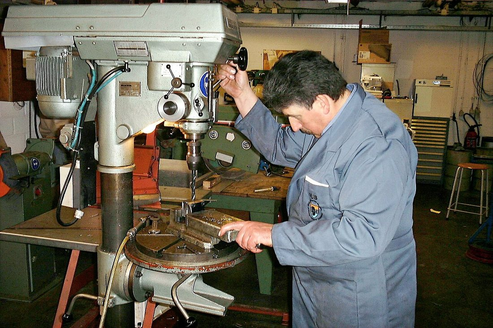
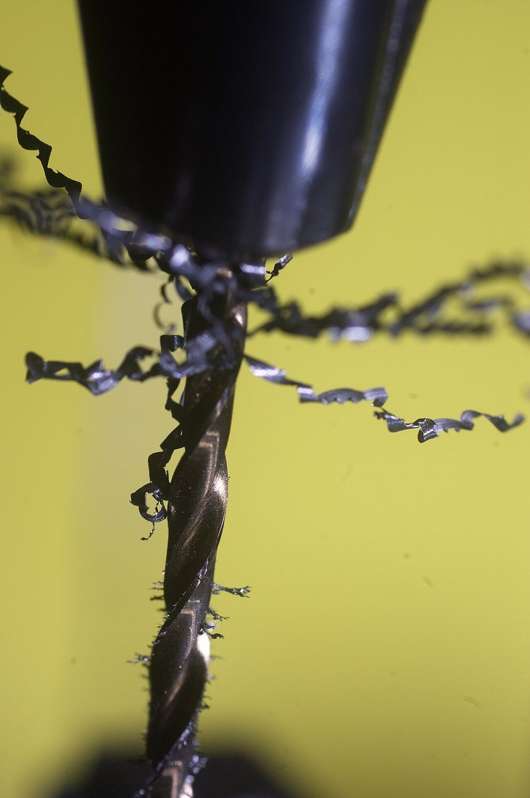
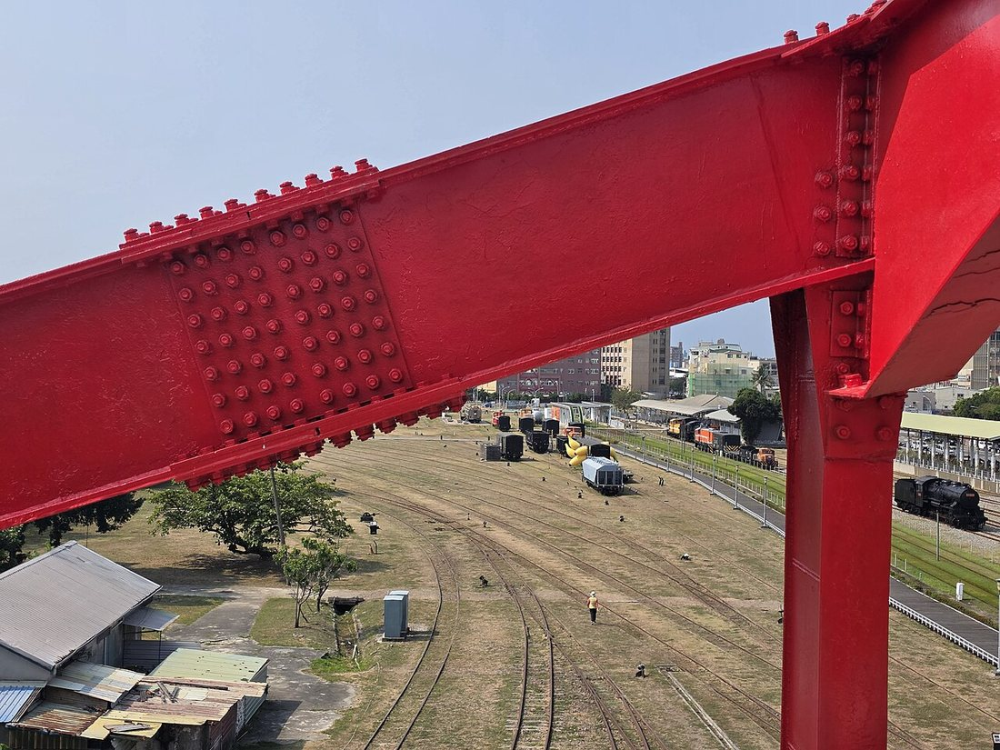
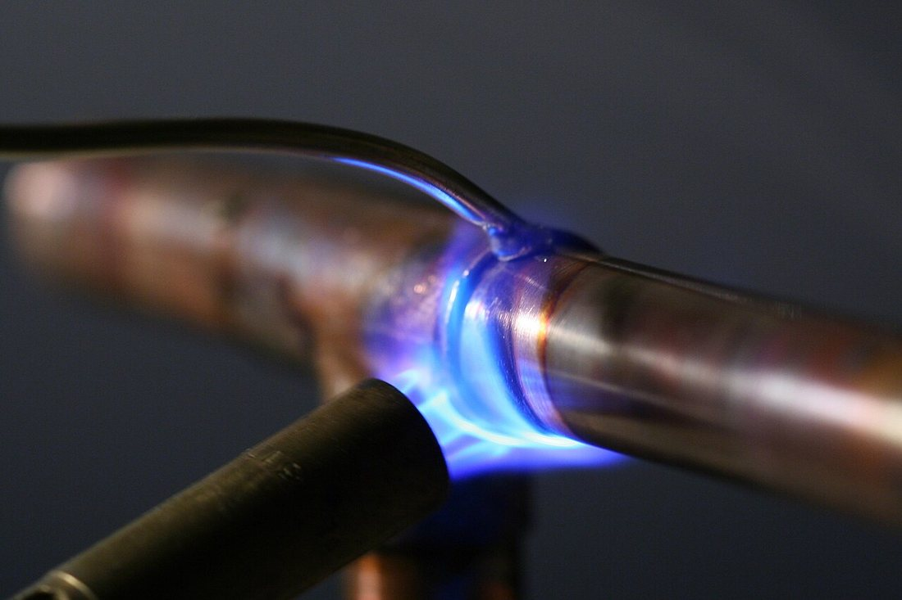
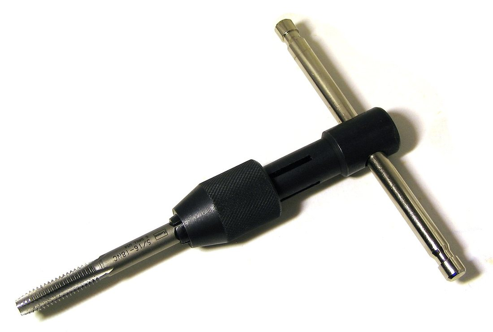

Көркем еңбек (ұлдар) · 3-бөлім · Металл өңдеу Art & Craft (Boys) · Section 3 · Metalworking Художественный труд (мальчики) · Раздел 3 · Обработка металла
🔩 Металды бұрғылау және біріктіру (тойтарма, дәнекерлеу, бұранда)
🔩 Drilling and Joining Metal (Rivets, Soldering, Threads)
🔩 Сверление и соединение металла (заклёпки, пайка, резьба)
Алдымен дәл тесік бұрғылаймыз — содан кейін бөлшектерді тойтармамен, дәнекермен немесе бұрандамен біріктіреміз. First we drill an accurate hole — then we join the parts with rivets, solder or a threaded fastener. Сначала сверлим точное отверстие — затем соединяем детали заклёпкой, пайкой или резьбой.
Бір металл бөлшектен бұйым жасау сирек кездеседі — әдетте бірнеше бөлшекті бір-бірімен біріктіреміз. Ал біріктірудің көбі дәл тесіктен басталады: тесік қисық не диаметрі қате болса, бүкіл түйіспе бос болады. Сондықтан осы плакатта алдымен бұрғылауды (тесік шығару), содан кейін металды біріктірудің үш негізгі тәсілін қарастырамыз: тойтарма (заклёпка) — ажыратылмайтын механикалық түйіс; дәнекерлеу (пайка) — балқыған дәнекермен жабыстыру; бұрандалы қосылыс (резьба) — бұрандама мен сомынмен ажыратылатын түйіс. Әр тәсілдің өз орны, артықшылығы және қауіпсіздік ережесі бар. A product is rarely made from a single piece of metal — usually several parts are joined together. And most joining begins with an accurate hole: if the hole is crooked or the wrong diameter, the whole joint will be loose. So on this poster we look first at drilling (making holes), and then at the three main ways to join metal: riveting — a permanent mechanical joint; soldering — bonding with molten solder; and a threaded joint — a removable connection made with a screw and a nut. Each method has its place, its advantages and its safety rules. Изделие редко делают из одной металлической детали — обычно несколько деталей соединяют вместе. А большинство соединений начинается с точного отверстия: если отверстие кривое или неверного диаметра, весь стык будет шататься. Поэтому на этом плакате мы сначала разберём сверление (получение отверстий), а затем три основных способа соединения металла: заклёпка — неразъёмное механическое соединение; пайка — скрепление расплавленным припоем; резьбовое соединение — разъёмный стык из винта и гайки. У каждого способа своё применение, свои достоинства и свои правила безопасности.
1. Бұрғылау — тесік шығару 1. Drilling — Making Holes 1. Сверление — получение отверстий
Металды бұрғылаудың негізгі құралы — бұрғылау станогы (сверлильный станок) мен спираль бұрғы (сверло). Тесік дәл, тік әрі қажетті диаметрде болуы керек. The main tools for drilling metal are a drill press and a twist drill bit. The hole must be accurate, straight and of the required diameter. Основной инструмент для сверления металла — сверлильный станок и спиральное сверло. Отверстие должно быть точным, прямым и нужного диаметра.

Белгілеу.Marking.Разметка. Тесік ортасын кернермен (керн) нүктелейміз — бұрғы сырғымайды.Punch the centre of the hole with a centre punch so the bit does not wander.Центр отверстия намечают кернером — сверло не соскользнёт.
Бекіту.Clamping.Закрепление. Бөлшекті машиналық тискіге қатты қыстырамыз, астына төсем қоямыз.Clamp the part firmly in a machine vice with a backing block underneath.Деталь прочно зажимают в машинных тисках, под низ кладут подкладку.
Бұрғылау.Drilling.Сверление. Бұрғыны баяу әрі бірқалыпты түсіреміз; қаттырақ басып жібермейміз.Feed the bit down slowly and evenly; do not press too hard.Сверло подают вниз медленно и равномерно; не давят слишком сильно.
Салқындату.Cooling.Охлаждение. Болатты бұрғылағанда майлап-салқындатамыз — бұрғы күюден сақталады.When drilling steel, add cutting fluid so the bit does not overheat.При сверлении стали подают смазку-охлаждение — сверло не перегреется.
Жоңқа (стружка). Тесіктен спираль металл жоңқасы шығады — оны қолмен алмаймыз, қылшақпен тазалаймыз.Swarf. The hole throws out spiral metal chips — never clear them by hand, use a brush.Стружка. Из отверстия выходит спиральная металлическая стружка — её убирают щёткой, а не рукой.

🔍 Үлкейту үшін суретті басыңыз🔍 Tap the photo to enlarge🔍 Нажмите на фото, чтобы увеличить
Спираль бұрғының құрылысы Parts of a Twist Drill Bit Устройство спирального сверла
✂️ Кескіш ұшыCutting tipРежущая часть
Екі кескіш қыр металды кеседі. Ұшы өткір болуы керек.Two cutting edges slice the metal. The tip must be sharp.Две режущие кромки срезают металл. Кончик должен быть острым.
🌀 ОйықтарFlutesКанавки
Спираль ойықтар жоңқаны тесіктен шығарады.The spiral flutes carry chips out of the hole.Спиральные канавки выводят стружку из отверстия.
🔧 СабыShankХвостовик
Тегіс сап патронға (қыстырғышқа) бекітіледі.The smooth shank is held in the chuck.Гладкий хвостовик зажимается в патроне.
Материал. Металды бұрғылауға HSS (жылдам кескіш болат) бұрғылары қолданылады — олар ағашқа арналған бұрғыдан гөрі қаттырақ әрі ыстыққа төзімді.Material. Metal is drilled with HSS (high-speed steel) bits — they are harder and more heat-resistant than wood bits.Материал. Металл сверлят свёрлами из HSS (быстрорежущей стали) — они твёрже и жароустойчивее свёрл по дереву.
2. Біріктірудің үш тәсілі — салыстыру 2. Three Ways to Join — Compared 2. Три способа соединения — сравнение
Қай тәсілді таңдау бұйымның мақсатына байланысты: оны кейін ажырату керек пе, қандай күшке төтеп беруі тиіс? Which method to choose depends on the purpose of the part: will it ever need to come apart, and what load must it bear? Какой способ выбрать, зависит от назначения детали: нужно ли её потом разбирать и какую нагрузку она должна нести?
| Способ | Что это | Соединение | Где применяют |
|---|---|---|---|
| Заклёпка | Металлический стержень с головкой, расклёпываемый в отверстии | Неразъёмное | Каркасы, листовой металл, мосты, авиация |
| Пайка | Скрепление деталей расплавленным припоем (олово) | Неразъёмное | Электроника, жесть, провода, радиаторы |
| Резьба | Винт (болт) и гайка с винтовой нарезкой | Разъёмное | Машины, мебель, всё, что разбирают для ремонта |
| Тәсіл | Не екені | Түйіс | Қайда қолданады |
|---|---|---|---|
| Тойтарма | Бастиегі бар металл шыбық, тесікте тойтарылады | Ажыратылмайтын | Қаңқалар, табақ металл, көпірлер, авиация |
| Дәнекерлеу | Бөлшектерді балқыған дәнекермен (қалайы) жабыстыру | Ажыратылмайтын | Электроника, қаңылтыр, сым, радиатор |
| Бұранда | Бұрандалы бұрандама (болт) мен сомын | Ажыратылатын | Машиналар, жиһаз, жөнделетін бұйымдар |
| Method | What it is | Joint | Where used |
|---|---|---|---|
| Rivet | A metal pin with a head, hammered flat inside a hole | Permanent | Frames, sheet metal, bridges, aircraft |
| Soldering | Bonding parts with molten solder (tin alloy) | Permanent | Electronics, tinware, wires, radiators |
| Thread | A screw (bolt) and a nut with a helical thread | Removable | Machines, furniture, anything repaired |
3. Тойтарма (заклёпка) — ажыратылмайтын түйіс 3. Rivets — A Permanent Joint 3. Заклёпки — неразъёмное соединение
Тойтарма — бастиегі бар жұмсақ металл шыбық. Екі тесіктен өткізіп, бос ұшын балғамен жалпайтамыз — екінші бастиек пайда болады. A rivet is a soft metal pin with a head. It is pushed through two holes and its free end is hammered flat — forming a second head. Заклёпка — мягкий металлический стержень с головкой. Её вставляют в два отверстия и расклёпывают свободный конец молотком — образуется вторая головка.
Тесік бұрғылау.Drill the holes.Сверлим отверстия. Екі бөлшекті қатар қойып, тойтарма диаметріндей тесік бұрғылаймыз.Put the two parts together and drill a hole the diameter of the rivet.Складываем две детали и сверлим отверстие под диаметр заклёпки.
Тойтарма салу.Insert the rivet.Вставляем заклёпку. Бастиегі бір жақта тұратындай етіп тесікке кіргіземіз.Push it in so the head sits on one side.Вставляем так, чтобы готовая головка была с одной стороны.
Тойтару.Set the rivet.Расклёпываем. Бос ұшын балғамен ұрып жалпайтамыз — екінші бастиек жасалады.Hammer the free end flat to form the second head.Молотком расплющиваем свободный конец — образуется вторая головка.
Тексеру.Check.Проверяем. Түйіс берік әрі бөлшектер тербелмейтін болуы керек.The joint must be tight and the parts must not wobble.Соединение должно быть плотным, детали не должны шататься.
Заманауи тәсіл. Бір жағынан ғана қол жететін жерде сору тойтармасы (вытяжная заклёпка) мен қол құралы — заклёпочник қолданылады.Modern way. Where you can reach only one side, a pop (blind) rivet and a hand rivet gun are used.Современный способ. Где доступна только одна сторона, применяют вытяжную заклёпку и ручной заклёпочник.

4. Дәнекерлеу (пайка) — балқыған дәнекермен біріктіру 4. Soldering — Joining with Molten Solder 4. Пайка — соединение расплавленным припоем
Дәнекерлеуде бөлшектер балқымайды — оларды балқыған дәнекер (припой) жабыстырады. Дәнекердің балқу температурасы металдан төмен. In soldering the parts themselves do not melt — they are bonded by molten solder, an alloy that melts at a lower temperature than the metal. При пайке сами детали не плавятся — их скрепляет расплавленный припой, сплав с температурой плавления ниже, чем у металла деталей.

Тазалау.Clean.Зачищаем. Түйісетін беттерді жалтырағанша тазалаймыз: кір бетке дәнекер жабыспайды.Clean the surfaces until shiny — solder will not stick to a dirty surface.Зачищаем поверхности до блеска: к грязной поверхности припой не пристанет.
Флюс жағу.Apply flux.Наносим флюс. Флюс (канифоль не паста) тотты кетіреді, дәнекерді жайылтады.Flux (rosin or paste) removes oxide and helps the solder flow.Флюс (канифоль или паста) убирает окисел и помогает припою растекаться.
Қыздыру.Heat.Прогреваем. Түйісті дәнекерлегішпен (паяльник) не жанарғымен қыздырамыз — дәнекерді емес, металды.Heat the joint with a soldering iron or torch — heat the metal, not the solder.Прогреваем стык паяльником или горелкой — нагревают металл, а не сам припой.
Дәнекер беру.Feed solder.Подаём припой. Қызған түйіске дәнекерді тигіземіз — ол балқып, саңылауды толтырады.Touch solder to the hot joint — it melts and fills the gap.Касаемся припоем горячего стыка — он плавится и заполняет зазор.
Суыту.Cool.Остужаем. Қозғалтпай суытамыз — суыған дәнекер жылтыр әрі тегіс болуы керек.Let it cool without moving — a good joint is shiny and smooth.Даём остыть без движения — хороший шов блестящий и ровный.
5. Бұранда (резьба) — ажыратылатын түйіс 5. Threads — A Removable Joint 5. Резьба — разъёмное соединение
Бұрандалы түйісті кез келген уақытта ашуға болады. Ішкі бұранданы (тесікте) метчик (тапом), сыртқы бұранданы (шыбықта) плашка (дайс) арқылы кеседі. A threaded joint can be opened any time. An internal thread (in a hole) is cut with a tap, an external thread (on a rod) with a die. Резьбовое соединение можно в любой момент разобрать. Внутреннюю резьбу (в отверстии) нарезают метчиком, наружную (на стержне) — плашкой.

🔍 Үлкейту үшін суретті басыңыз🔍 Tap the photo to enlarge🔍 Нажмите на фото, чтобы увеличить
Тесік бұрғылау.Drill the hole.Сверлим отверстие. Бұранда диаметрінен сәл кіші тесік бұрғылаймыз (мыс., М6 үшін ⌀5 мм).Drill a hole slightly smaller than the thread (e.g. ⌀5 mm for M6).Сверлим отверстие чуть меньше резьбы (например, ⌀5 мм под М6).
Метчикті орнату.Fit the tap.Ставим метчик. Метчикті вороткаға бекітіп, тесікке тік қоямыз.Fix the tap in a T-wrench and set it straight into the hole.Закрепляем метчик в воротке и ставим строго прямо.
Кесу.Cut.Нарезаем. Екі бұрау алға — жарты бұрау артқа: жоңқа сынып, метчик сынбайды.Two turns forward, half a turn back: this breaks the chip and saves the tap.Два оборота вперёд — пол-оборота назад: стружка ломается, метчик не сломается.
Майлау.Lubricate.Смазываем. Майлап отырамыз — бұранда таза әрі тегіс шығады.Keep adding oil — the thread comes out clean and smooth.Постоянно смазываем — резьба выходит чистой и ровной.
⚠️ Қауіпсіздік ережелері ⚠️ Safety Rules ⚠️ Правила безопасности
🥽 КөзілдірікGogglesОчки
Бұрғылағанда қорғаныш көзілдірік киеміз — жоңқа ұшады.Wear safety goggles when drilling — chips fly off.При сверлении надеваем защитные очки — стружка летит.
🔥 Ыстық металлHot metalГорячий металл
Дәнекерленген түйіс пен паяльник ыстық — суығанша ұстамаймыз.A soldered joint and the iron are hot — do not touch until cool.Паяный стык и паяльник горячие — не трогаем, пока не остынут.
💨 ЖелдетуVentilationПроветривание
Дәнекерлеу түтінін жұтпаймыз — желдетілген жерде жұмыс істейміз.Do not breathe solder fumes — work in a ventilated place.Не вдыхаем дым пайки — работаем в проветриваемом месте.
✋ БекітClamp itЗакрепи
Бөлшекті қолмен ұстамай, тискіге қыстырамыз.Clamp the part in a vice, never hold it by hand.Деталь зажимаем в тисках, а не держим рукой.
✅ Есте сақта ✅ Remember ✅ Запомните
1
Әр түйіс дәл тесіктен басталады: кернерле, бекіт, баяу бұрғыла.Every joint starts with an accurate hole: punch, clamp, drill slowly.Любое соединение начинается с точного отверстия: накерни, закрепи, сверли медленно.
2
Тойтарма мен дәнекер — ажыратылмайтын, ал бұранда — ажыратылатын түйіс.Rivets and solder give a permanent joint; a thread gives a removable one.Заклёпка и пайка — неразъёмное соединение, резьба — разъёмное.
3
Тазалық пен майлау — сапаның кепілі: таза бет, флюс, салқындату.Cleanliness and lubrication ensure quality: clean surface, flux, cooling.Чистота и смазка — залог качества: чистая поверхность, флюс, охлаждение.
Бұрғылау, тойтарма, дәнекерлеу және бұранда — металл өңдеудің негізгі дағдылары. Қай тәсілді таңдасаң да, басты ереже бір: дәлдік, тазалық және қауіпсіздік. Drilling, riveting, soldering and threading are the core skills of metalworking. Whatever method you choose, the main rule is the same: accuracy, cleanliness and safety. Сверление, заклёпки, пайка и резьба — основные навыки обработки металла. Какой бы способ ты ни выбрал, главное правило одно: точность, чистота и безопасность.